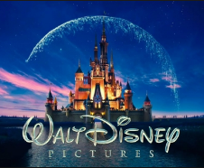

Top Rated Movies
And why there great
Disney Movies
You may have noticed that most of the favorited movies above were made by Disney. This is for a good reason. Disney is one of the biggest animation studios in the world and has produced many movies with the first one being all the way back in 1937, which most of you might know was Snow White and the Seven Dwarfs. Disney's most recent movie's have been released in 2017 and 2018.

Why are Disney Movie's favorited so much?
In all honesty, it is very difficult to pinpoint the "best" Disney movie ever. Especially with there being a total of (at least) 146 Disney movies in total. Every list that I have seen is different, as expected. But these are the movies that tend to be at the top.